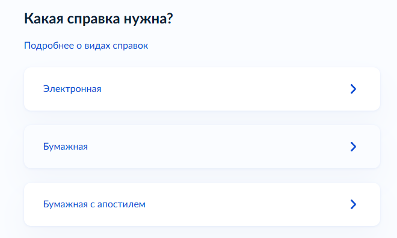

Документы
Справка о несудимости для ВНЖ цифрового кочевника в Испании
Помощь в подаче документов на ВНЖ Испании: t.me/ola_espana
Применимо для первичной подачи на ВНЖ цифрового кочевника в Испании по контракту или по найму.
Что требует UGE
Нужна справка о несудимости из страны или стран, где заявитель проживал последние 2 года. Декларация об отсутствии судимости за последние 5 лет подается отдельно и не заменяет справку.
Если заявитель уже имеет испанскую резиденцию или разрешение на пребывание сроком более 6 месяцев и ранее подавал справку для получения этого разрешения, новую справку UGE не требует.
Какую справку получать в России
Официальное название документа: «Справка о наличии (отсутствии) судимости и (или) факта уголовного преследования либо о прекращении уголовного преследования».
Для подачи нужен комплект:
- Бумажная справка МВД.
- Апостиль МВД на справке.
juradoперевод справки и апостиля на испанский.
Электронный PDF с Госуслуг без апостиля не подходит.
Как заказать на Госуслугах
- Откройте услугу «Справка об отсутствии судимости».
- На экране «Какая справка нужна?» выберите «Бумажная с апостилем».

- В заявлении укажите страну назначения: Испания. Закажите выдачу бумажного оригинала с апостилем, а не электронный PDF и не бумажную справку без апостиля.
- После получения передайте справку и апостиль присяжному переводчику.
Граждане России могут также оформить справку в консульстве России в Испании.
Получение через представителя
При выдаче в Москве на ул. Велозаводская, 6А справку может получить представитель по доверенности. Принимают как простую рукописную, так и нотариальную доверенность; отдельные сотрудники требуют оригинал нотариальной доверенности.
Если проживали в другой стране
Нужна отдельная справка из каждой страны проживания за последние 2 года. Для каждой справки проверьте способ легализации: апостиль или консульская легализация. Затем сделайте jurado перевод на испанский.
Если справка подается не из страны гражданства, приложите документ, подтверждающий проживание в этой стране: ВНЖ, регистрацию или другой официальный документ.